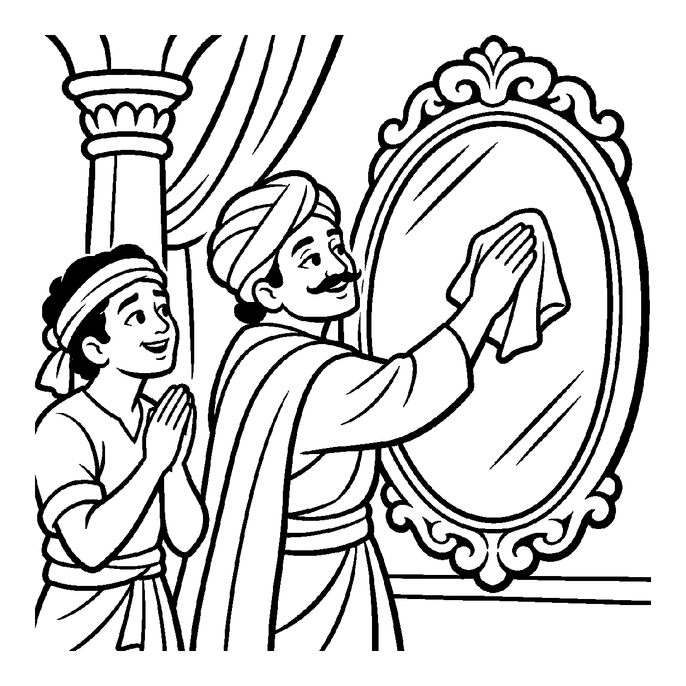

એક પવિત્ર ધ્યાનીના હાથમાં એક શુદ્ધ, પારદર્શક સ્ફટિક મણિ રહેલો છે. જ્યારે તે મણિની નજીક લાલ જાસૂસનું પુષ્પ મૂકવામાં આવે છે, ત્યારે તે મણિ સર્વત્ર લાલ-ઘુમ્મટ જેવો ઝળહળી ઊઠે છે. અજ્ઞાની વ્યક્તિ એમ માની બેસે છે કે "આ મણિ પોતે લાલ રંગથી રંગાઈ ગયો છે!" પરંતુ જ્યારે પુષ્પને દૂર હટાવી લેવામાં આવે છે, ત્યારે જણાય છે કે તે સ્ફટિકમાં લાલ રંગનો એક સૂક્ષ્મ અણુ પણ કદી પ્રવેશ્યો નહોતો; તે તો પુષ્પના રંગથી સદાકાળ સર્વથા શૂન્ય જ હતો! તેવી જ રીતે આત્મામાં સંસારાવસ્થા દરમિયાન ક્રોધ, માન, માયા, લોભ અને કર્મપુદ્ગલોના અનેક પ્રતિબિંબો પડતા જણાય છે, છતાં વાસ્તવિક દ્રષ્ટિએ આત્મા તે તમામ પરભાવોથી સદા અલિપ્ત અને શૂન્ય છે. પરભાવોના અભાવની અપેક્ષાએ આત્માને કેવળ અને શૂન્ય જોતો દ્રષ્ટિકોણ એટલે 'શૂન્યનય'.
શૂન્યનય આત્માના અસ્તિત્વનો નાશ નથી કરતો, પણ આત્મામાંથી અહંકાર અને મમકારના કચરાને સાવ સાફ કરી દે છે. આત્મામાં રાગ નથી, દ્વેષ નથી, મોહ નથી, જન્મ કે મરણ નથી; તે તમામ પરભાવોથી કેવળ શૂન્ય છે. જ્યારે સાધક આ શૂન્યતાનો અનુભવ કરે છે, ત્યારે સંસારનો તમામ ભાર તેના ખભા પરથી ઊતરી જાય છે.
આ નય પરભાવોથી ખાલી થઈને પોતાના શુદ્ધ સ્વરૂપમાં પૂર્ણપણે સ્થિર થવાનો માર્ગ બતાવે છે.
સ્ફટિક મણિમાં રંગ નહિ, પુષ્પ તણો આભાસ;
શૂન્યનયે પરભાવ ત્યજી, થાય આતમ પ્રકાશ.
રાગ દ્વેષથી શૂન્ય હું, કેવળ જ્ઞાન સ્વરૂપ;
નિર્લેપ આતમ ભાળતાં, પ્રગટે શાંતિ અનૂપ.
પરભાવોથી ખાલી થઈને પોતાના શુદ્ધ સ્વરૂપમાં પૂર્ણપણે સ્થિર થવાનો માર્ગ બતાવે છે.

ચિત્રકુટ નગરના એક રાજમહેલમાં એક મોટો, અત્યંત સ્વચ્છ આયનો લટકાવેલો હતો. એક દિવસ મહેલમાં કામ કરતો સેવક શ્યામલ અરીસાની સફાઈ કરતો હતો. અકસ્માતે તેના હાથમાં લાગેલી કાળી મેશ અરીસાની સપાટી પર અડી ગઈ અને એક મોટો કાળો ડાઘ પડી ગયો. શ્યામલ ગભરાઈ ગયો: "અરેરે! આ કિંમતી અરીસો હંમેશ માટે કાળો થઈ ગયો! હવે આ કાચમાંથી કાળારાશ ક્યારેય નહીં જાય!" તે અરીસા તરફ જોઈને ધ્રૂજતો હતો અને રડવા લાગ્યો. તેના મનમાં ભય હતો કે અરીસાની શુદ્ધતા નષ્ટ થઈ ગઈ છે.
તે સમયે મહેલના જ્ઞાની પ્રધાન ત્યાં આવી પહોંચ્યા. તેમણે શ્યામલને રડતો જોઈને પૂછ્યું: "શ્યામલ! તું કેમ આટલો ગભરાય છે?" શ્યામલે કહ્યું: "સ્વામી! આ અરીસો કાળો થઈ ગયો છે." પ્રધાને સ્મિત કરીને રેશમી રૂમાલ લીધો અને એક જ પળમાં કાચ પરથી મેશ લૂછી નાખી! અરીસો ફરીથી પહેલાં જેવો જ ઝળહળી ઊઠ્યો. પ્રધાને શ્યામલને સમજાવ્યું: "શ્યામલ! શૂન્યનયને જો! મેશ કાચની સપાટી પર માત્ર ચોંટી હતી, તે કાચની અંદર પ્રવેશી નહોતી! અરીસો તો સદા કાળાશથી શૂન્ય જ હતો. તેવી જ રીતે તારા આત્મા પર કર્મ અને ચિંતાઓની મેશ ભલે દેખાય, પણ તારો ચૈતન્ય આત્મા તે તમામ પાપ અને સંતાપથી સદાકાળ શૂન્ય અને અલિપ્ત છે!" આ સાંભળતાં જ શ્યામલના અંતરમાંથી ભયનો ભાર ઊતરી ગયો. તેણે પોતાની અંદર રહેલા અખંડ પવિત્ર આત્માનું સ્મરણ કર્યું અને તેનું મન સહજ શાંતિમાં ડૂબી ગયું.
જો જીવ આત્માને સર્વથા શૂન્ય માનીને તેના જ્ઞાન, દર્શન અને આનંદ જેવા મૂળ ગુણોનો પણ લોપ કરી દે, તો તે બૌદ્ધ શૂન્યવાદમાં પતિત થઈ નાસ્તિક બની જાય છે. એક જ પાસાને પકડી રાખવાથી વસ્તુની સમગ્ર અનેકાંતમય સત્તા વિખંડિત થાય છે અને સાધક પોતાના જ એકાંગી આગ્રહના બંધનમાં ફસાઈને સાચી શાંતિ ગુમાવી બેસે છે.
આ નય પરભાવોની અપેક્ષાએ શૂન્ય અને સ્વભાવની અપેક્ષાએ સદ્ભાવવાન બતાવે છે, જેથી ચેતના પોતાના આત્મસ્વરૂપમાં સ્થિર થાય છે.